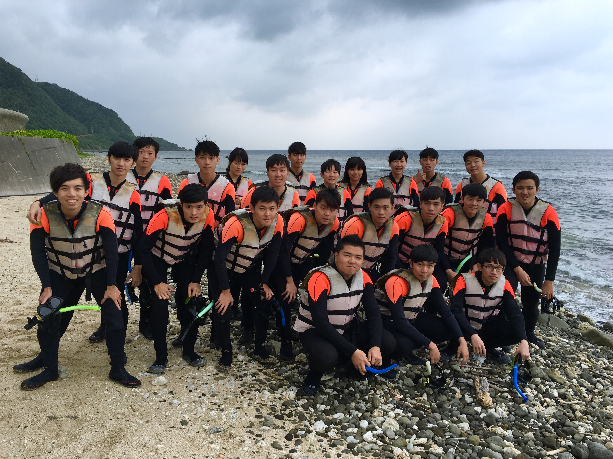
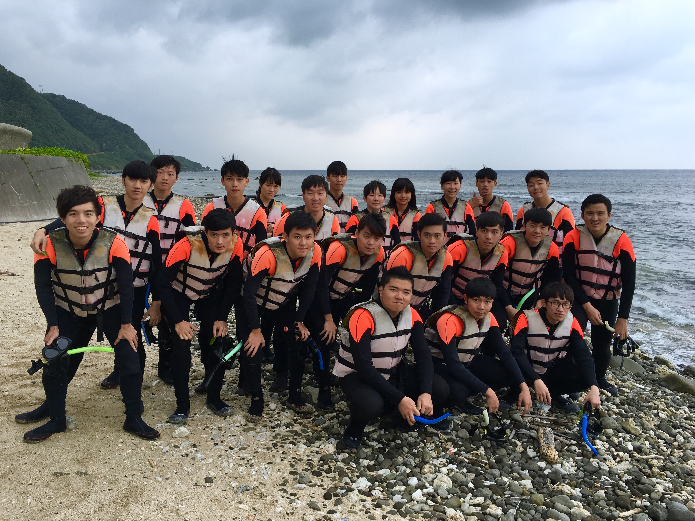

即將成為大學新鮮人的新生們，相信對大學有許多憧憬跟期待，你可能想要在大學時期做很多事，想要證明自己已經可以獨立自主；想要航向自己的夢想，朝著自己的目標前進；想要在人際關係方面好好發展，成為系上的夯哥夯姐；想要為人生中最後一段可以稱為青春的時期，不留下任何遺憾。
不論你對大學的想法是什麼，一切的一切都要從『迎新宿營』開始，因為他是上大學後的第一個系上活動，是開啟大學生活的重要開端，他將會為你帶來無數的感動跟回憶，你會更認識系上同學或學長姐，可能會更愛成大這個地方。今年資訊系還特別邀請到了成大政治系的同學一同來參與！！！一進大學就能夠認識不同學院的同學，對你的將來不論哪一方面一定都有很多很大的益處，所以大家不要忘記報名唷。

 
